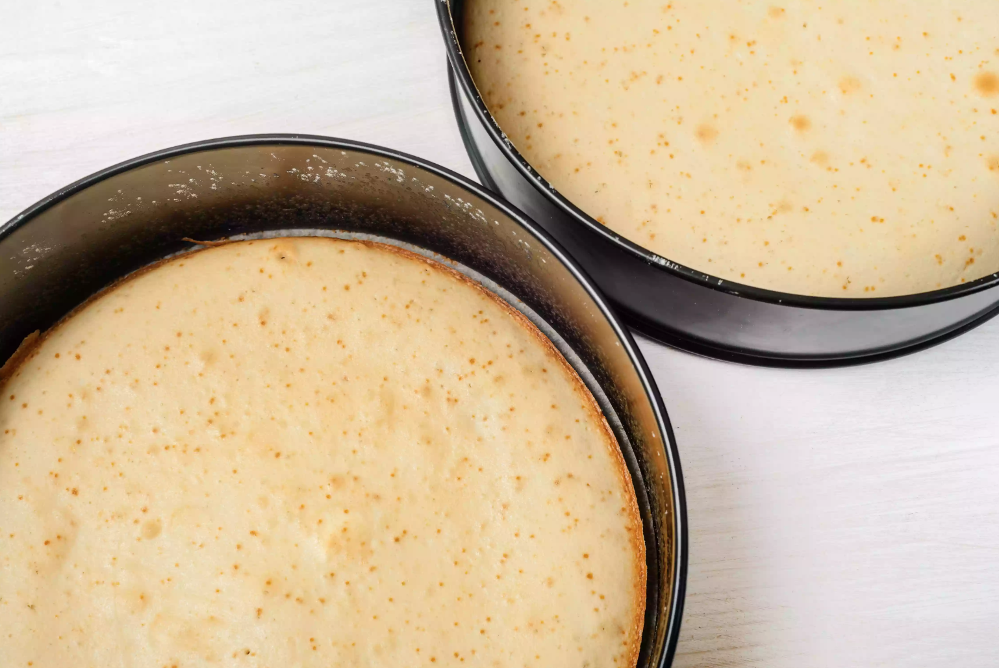

Homemade Vanilla Cake is the easiest homemade cake recipe ever! Just 4 ingredients you likely already have on hand: sugar, eggs, flour and vanilla. Simple & easy cake recipe that’s a cross between angel food cake and sponge cake.
 |
Preheat oven to 350 degrees F. Grease and flour a bundt cake pan.
Combine sugar and eggs in a mixing bowl and use an electric mixer to mix for 1 minute. Add in flour and vanilla, then mix on medium speed for 8 minutes.
Pour batter into cake pan and bake for 30-35 minutes, until a toothpick inserted comes out clean. (Cake will be very soft to the touch and register 200 degrees F on a thermometer.)
Cool for 20-30 minutes, then invert onto a plate and cool completely.
Serve with berries and cream or top with almond glaze, then berries.